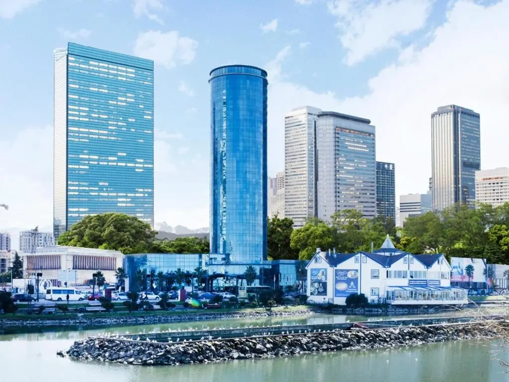
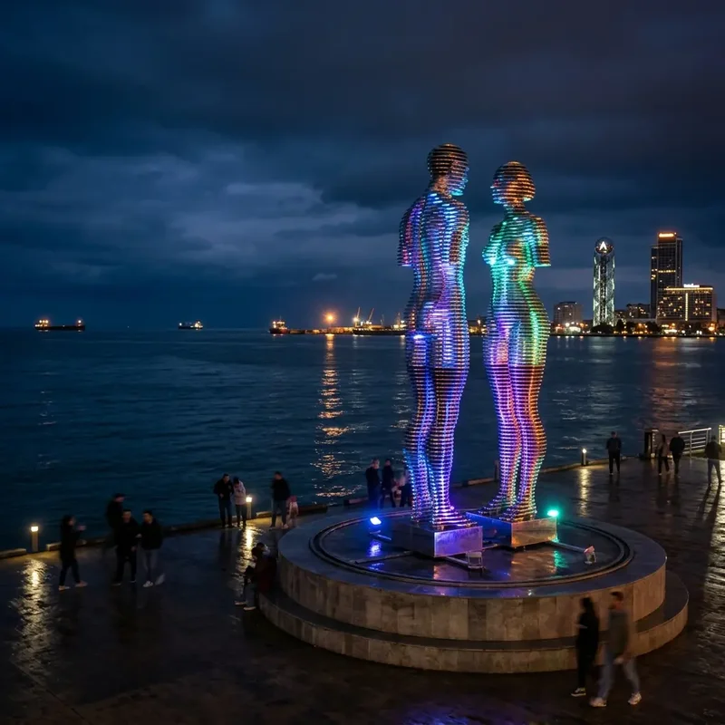
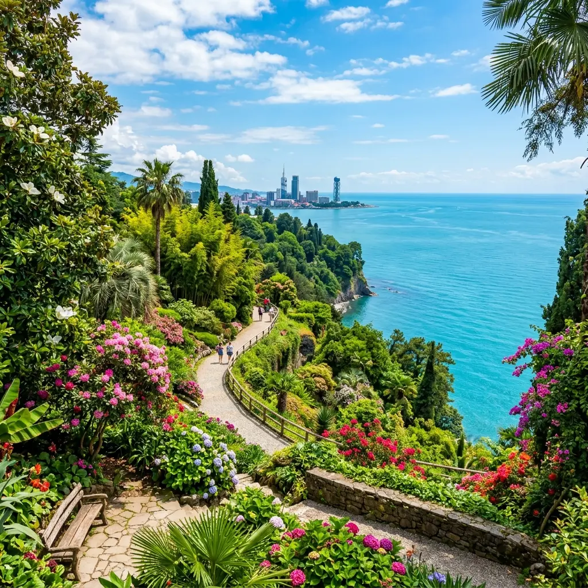
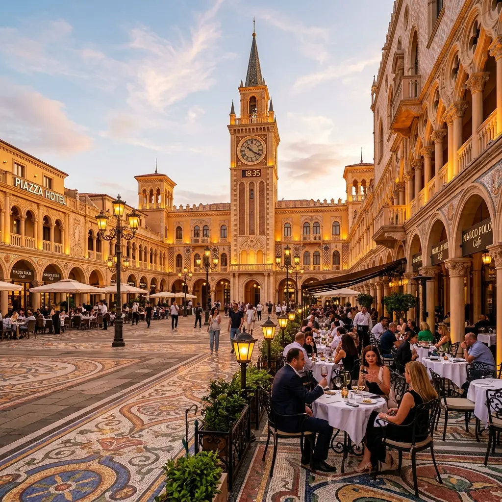
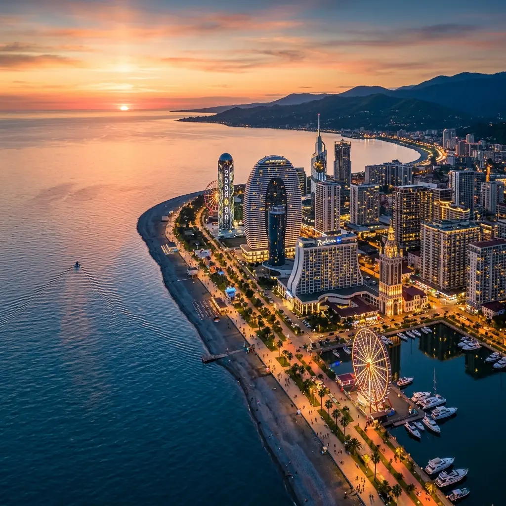
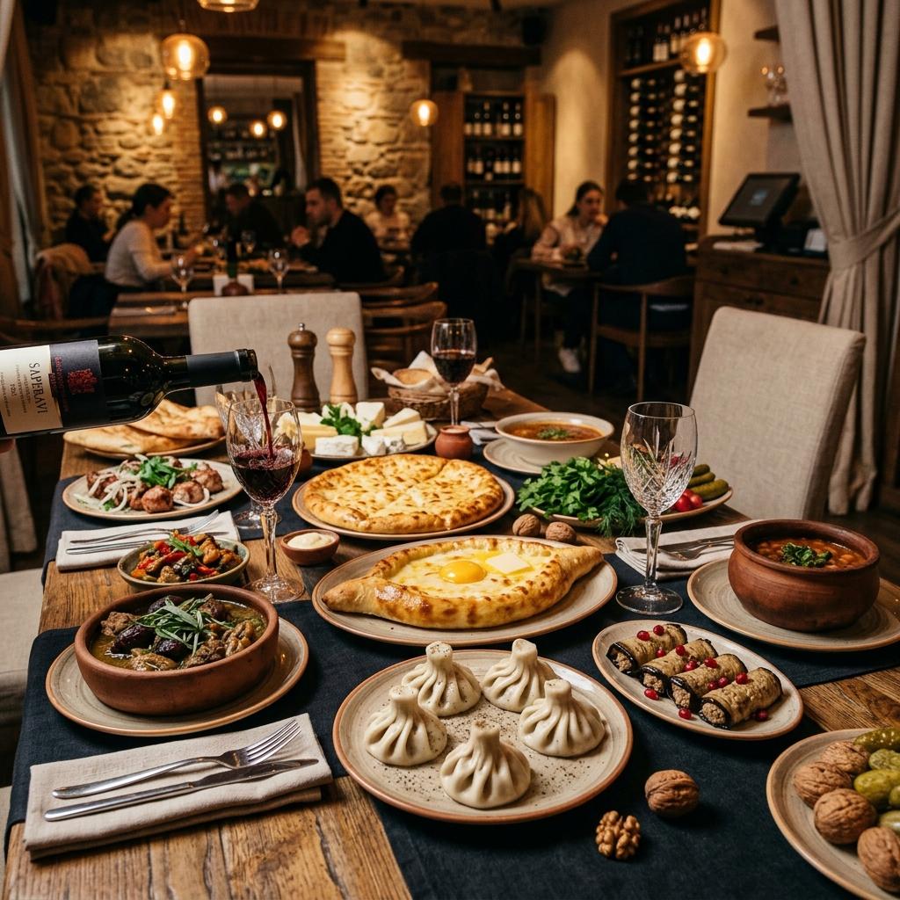
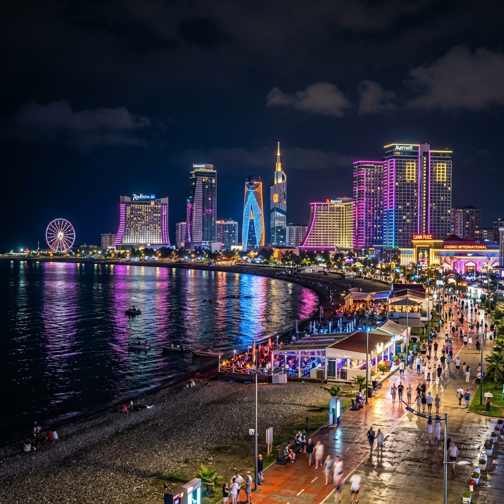

Откройте для себя исторические и туристические богатства Батуми, жемчужины Черного моря.
Батуми — столица Автономной Республики Аджария в Грузии и один из самых популярных туристических центров на побережье Черного моря.
Наслаждайтесь отдыхом в самом центре Батуми, в нескольких минутах ходьбы от многих туристических достопримечательностей.


Эта культовая стальная статуя, представляющая влюбленных, которые не могут встретиться, каждый вечер устраивает завораживающее шоу с подсветкой.

Один из крупнейших и богатейших ботанических садов в мире, здесь произрастают тысячи видов растений.

Благодаря архитектуре в итальянском стиле, мозаике и живой музыке это одного из самых приятных мест для встреч в Батуми.

Батумский бульвар, основанный в 1881 году и протянувшийся на 7 километров, отражает душу города с его береговой линией и современными парками.
Откройте для себя уникальные вкусы грузинской кухни. Отправьтесь в гастрономическое путешествие с аджарским хачапури, хინკალი и всемирно известными грузинскими винами.


Батуми с его сверкающими казино, эксклюзивными пляжными клубами и современными барами на крышах называют Лас-Вегасом Черного моря.